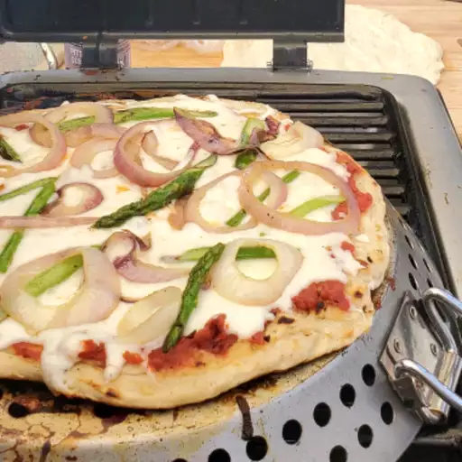

Pizza on the Grill

Pizza on the grill!😋
Description
Pizza on the grill is a fantastic way to make pizza at home! The heat of a hot grill is a perfect match for a professional pizza oven. This grilled pizza recipe makes the dough from scratch and flavors it with garlic and basil. Use your favorite variety of toppings and shredded cheese, but it's best not to overload the pizza. No pizza oven? No problem! Make your homemade pizza on the grill for that classic smoky, wood fired oven flavor. And even if you have a pizza oven, you might prefer these grilled pizzas from time to time.
Ingredients Required
For the Dough:
For the Toppings (customizable):
- Olive oil (for brushing the dough)
- Pizza sauce (tomato-based or alternatives like pesto or white sauce)
- Shredded mozzarella cheese (or other cheeses like provolone, cheddar, goat cheese)
- Your choice of toppings:
- Pepperoni, sausage, grilled chicken
- Sliced bell peppers, onions, mushrooms, olives, spinach, etc.
- Fresh basil or arugula (added after grilling)
Optional:
- Cornmeal or semolina (to prevent sticking on the grill)
- Garlic or Italian seasoning (for added flavor)
Helpful Tools:
- Grill (gas or charcoal)
- Pizza stone or grill-safe pizza pan (optional but helps with even cooking)
- Rolling pin
- Tongs and spatula
- Oil brush
Steps
- Gather all ingredients.
- Make dough: Pour warm water into a large bowl; dissolve yeast and sugar in warm water. Let stand until yeast softens and begins to form a creamy foam, about 5 to 10 minutes.
- Mix in flour, 1 tablespoon olive oil, and salt until dough pulls away from the sides of the bowl.
- Turn onto a lightly floured surface. Knead until smooth, about 8 minutes.
- Place dough in a well-oiled bowl and cover with a damp cloth.
- Set aside to rise until doubled, about 1 hour. Punch down; knead in garlic and basil. Set aside to rise for 1 more hour, or until doubled again.
- Meanwhile, make garlic oil: Combine 1/2 cup olive oil with minced garlic in a microwave-safe cup or bowl. Heat for 30 seconds in the microwave.
- Preheat an outdoor grill for high heat; brush the grate with garlic oil.
- Make pizzas: Punch down dough and divide in half. Form each half into an oblong shape 3/8 to 1/2 inch thick.
- Carefully place one piece of dough on the hot grill. Dough will begin to puff almost immediately. When the bottom crust has lightly browned, turn dough over using two spatulas.
- Working quickly, brush garlic oil over crust.
- Top with 1/2 of each of the following: tomato sauce, chopped tomatoes, olives, red peppers, cheese, and basil.
- Close the lid and cook until cheese melts. Remove from grill and set aside to cool for a few minutes. Repeat with second piece of dough.
- Serve hot and enjoy!
Go to Home Page